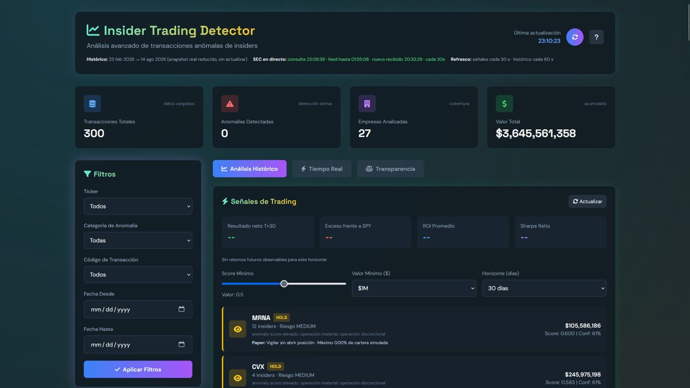
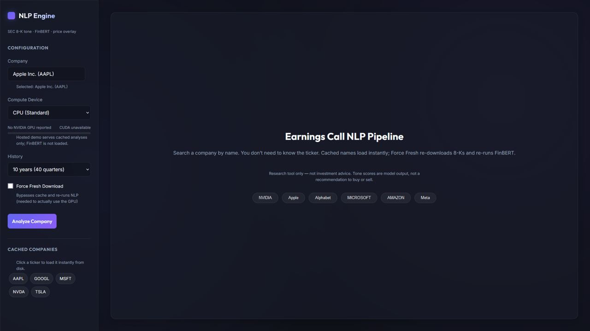

About Me
Statistician and Data Scientist with hands-on experience building data-driven solutions for industrial manufacturing at Renault Group, and applied research in agricultural risk modelling at ITACyL.
Strong background in statistical modelling, machine learning, predictive analytics and data visualisation, with end-to-end experience turning fragmented business data into practical, production-ready analytical applications.
Experienced in Python, FastAPI, statistical modelling and time series, with a strong focus on solving open-ended problems independently — from data ingestion and modelling to deployment and monitoring.
Particularly interested in NLP, time series, MLOps and modern data architectures. Always learning new tools and applying them to real-world problems.
Experience & Education
Thesis grade: 9.8 / 10
Thesis: "Predictive Models for Common Vole Population Fluctuations and Agricultural Crop Risk" — early-warning modelling using time-series analysis.
- Built the institute's first predictive modelling approach for common vole population dynamics using historical regional data through 2024.
- Built statistical and ML models in R and Python with spatial and temporal validation, reducing 145 candidate variables to 12 key predictors.
- Achieved R² = 0.75 in geographic validation and over 95% accuracy in forecasting population trend direction.
- Identified demographic cycles ranging from approximately 2 to 7 years.
The Challenge
Common vole outbreaks can devastate crops across Castilla y León, but ITACyL had no predictive model for anticipating them — decisions were reactive, based on population counts after numbers had already started climbing.
The Approach
Built the institute's first predictive modelling approach for common vole population dynamics, using historical regional data through 2024. Starting from 145 candidate variables, narrowed them down to 12 key predictors using statistical and machine learning models in R and Python, validated both spatially and temporally so the model would generalise to regions and years it hadn't seen.
The Result
The model reached an R² of 0.75 in geographic validation and over 95% accuracy in forecasting the direction of population trends, and surfaced demographic cycles of roughly 2 to 7 years — giving the institute an early-warning tool where before there was none.
- Built an end-to-end absenteeism analytics platform integrating React, FastAPI, Python, Looker, local datasets and web/JSON sources, working with 3M+ person-day records across 99 variables and growing.
- Developed the application architecture from data processing and API services to an interactive React frontend, replacing fragmented Excel/legacy-tool workflows with a centralized analytical platform.
- Built 10+ functional modules covering factory, department, workshop, UET and employee-level analysis, with cascading filters and interactive data exploration.
- Implemented authentication, sessions, role-based access control, employee management, configuration management and automated reporting through a FastAPI backend and React frontend.
- Developed interactive analytical dashboards with Plotly, including absenteeism evolution, organizational breakdowns, employee tracking, recurrence analysis and operational KPIs.
- AI assistant: integrated a natural-language assistant capable of querying absenteeism data within the user's current organizational scope and returning tables, charts and employee-level results.
- Forecasting: developed experimental absenteeism forecasting models using Elastic Net, Random Forest and SARIMAX, with calendar features, lagged variables and temporal validation.
- Designed a walk-forward validation framework from scratch to evaluate forecasting performance while avoiding temporal data leakage.
- Worked with managers, HR and operational stakeholders to identify data-quality issues and define consistent absenteeism metrics and business rules.
The Challenge
Renault's Innovation Department tracked employee absenteeism through fragmented Excel workflows and legacy tools scattered across HR and plant management, making it hard to spot patterns across factory, department, workshop, UET and employee levels — let alone forecast upcoming spikes.
The Approach
Built a full-stack platform end to end — Python/FastAPI backend, React frontend — pulling from three data sources: Looker (through an automated pipeline for the large underlying datasets), local datasets and web/JSON feeds, together covering 3M+ person-day records across 99 variables and growing. It gives every department head, and the assistant director, a single place to see who's absent, when, why, and where else similar patterns are showing up, broken down by factory, department, workshop, UET and employee — with interactive dashboards, KPIs and automated reporting. It also handles the operational side: reassigning or excluding employees from a department, full user and permissions management, and an AI assistant that answers natural-language questions with tables, charts and employee-level detail. On top of that, experimental forecasting models (Elastic Net, Random Forest, SARIMAX) were validated with a custom walk-forward framework built specifically to avoid temporal leakage.
The Result
The platform replaced scattered manual spreadsheets with a single tool that every department head — and the assistant director — now uses day to day to manage absenteeism across the plant, from spotting recurring patterns to reassigning staff and pulling reports for meetings.
- Maintained and extended Docuzilla, a Python/DuckDB tool used daily by Renault engineers to identify similar vehicle configurations and investigate production issues.
- Optimized core processing logic, reducing execution time to less than 10% of the original runtime, while developing new features and algorithmic improvements.
- Developed an experimental next-day factory gas-consumption forecasting model using historical consumption, production and weather data.
- Designed a PostgreSQL database for quality-management dossiers, including schema, relationships, constraints, indexes and views.
The Challenge
Renault engineers relied on Docuzilla, an internal Python/DuckDB tool, to trace similar vehicle configurations and investigate production issues — but its core processing logic had become slow enough to get in the way of the daily troubleshooting it was meant to support.
The Approach
Rebuilt the core processing logic of Docuzilla, cutting execution time to under 10% of the original runtime, while adding new features and fixing longstanding pain points reported by engineers. Alongside it, built an experimental model to forecast the factory's next-day gas consumption from historical consumption, production and weather data, and designed a PostgreSQL database — schema, relationships, constraints, indexes and views — to properly structure the quality-management dossiers that had previously lived in scattered files.
The Result
Docuzilla went from a tool engineers tolerated to one they rely on for same-day answers, and the quality-management data finally has a structure built to be queried, not just stored.
Projects
Research tool for prioritising insider-trading filings, combining SEC Form 4 data, market context and anomaly detection into quantitative BUY/SELL/HOLD/IGNORE signals with confidence scores — plus a public transparency track record benchmarked against the S&P 500.
Public T+5 / T+15 / T+30 track record vs the S&P 500

Hover to playTap to playThe Challenge
Retail investors trying to track insider trading face an avalanche of noise: thousands of routine SEC Form 4 filings with no real informational value, burying the rare transactions that actually tend to precede a price move.
The Approach
Built a research pipeline that combines SEC Form 4 data, market context (price, volume, volatility) and anomaly detection to score each transaction, producing quantitative BUY/SELL/HOLD/IGNORE signals with a confidence level and an explanation of the underlying evidence.
The Result
Rather than just claim the signals work, the system publishes a public transparency track record with realised T+5/T+15/T+30 outcomes benchmarked against the S&P 500 — so performance is falsifiable, not just asserted.
Dashboard that scores SEC 8-K Exhibit 99.1 earnings releases with FinBERT, tracks uncertainty language over time, compares issuers, and overlays next-session stock returns versus SPY.
FinBERT on Exhibit 99.1 + next-session return vs SPY

Hover to playTap to playThe Challenge
Earnings press releases land as long, boilerplate-heavy 8-K filings. Tone, hedge language and how they shifted versus last quarter are hard to compare across issuers — and harder still to line up with the next-session stock move.
The Approach
Built a pipeline that pulls Exhibit 99.1 from SEC EDGAR, strips boilerplate, chunks the narrative and scores sentiment with FinBERT, while measuring uncertainty with independent lexicons. It builds per-issuer timelines, anomaly alerts versus each company's own history, a compare view on a shared window, and joins every filing date to Yahoo Finance prices: the close after the 8-K versus the last close on or before it, plus excess return versus SPY.
The Result
The FastAPI + Plotly dashboard ships with precomputed analyses for AAPL, GOOGL, MSFT, NVDA and TSLA, so sentiment, uncertainty, topic shifts and next-session returns are explorable immediately — locally or on the public demo.
Listening-habits dashboard built on Last.fm scrobble history, with sunburst charts, streamgraphs, animated bar-chart races and automatic listening-session detection.
View live demo ↗ View on GitHub ↗Analysis and optimisation of a seven-stock portfolio across different sectors (2020–2025): daily returns, robust covariance estimation, the efficient frontier, and a comparison of minimum-variance, maximum-return, maximum-Sharpe-ratio and equal-weighted portfolios.
View on GitHub ↗Code analysis and visualisation tool that turns a zipped Python project into an interactive graph of its data flow, showing every read, transformation and processing step from source to output.
NLP/LLM pipeline that compares literary characters across books to find psychological and narrative similarities, using a local LLM for profile generation and multilingual embeddings for similarity scoring.
Full social web app for tracking films and shows, with authentication, episode-by-episode tracking, detailed viewing statistics, awards tracking and a bulk-import system from spreadsheets.
Personal film-analytics platform with category and bias analysis, an awards scoring system, and ML-based clustering of personal taste ("vibes") with automatic cluster labelling via GPT-4o-mini.
Beetle mortality GLM
Classical beetle mortality dose–response study using logit, probit and cloglog GLMs, plus a sex × dose interaction analysis with model comparison and diagnostics.
View on GitHub ↗Health survey log-linear analysis
Three-way contingency table analysis of the Spanish National Health Survey (ENSE 2017), studying associations between BMI, sex, age and region with Cochran–Mantel–Haenszel tests.
View on GitHub ↗Ordinal log-linear models
Log-linear modelling of ordinal contingency tables, with model selection by AIC and marginal homogeneity testing between symmetry and quasi-symmetry models.
View on GitHub ↗Cycles and connected components
Program that builds graphs on a 2D grid with local and knight-move connections, detecting cycles and connected components via DFS, with matplotlib visualisation.
View on GitHub ↗2D hill-climbing optimisation
Hill Climbing optimisation over a 2D function surface with Monte Carlo restarts, comparing four memoization strategies against brute-force search on runtime and accuracy.
View on GitHub ↗Skills
Programming
Data Science & Statistics
Data & Visualization
Web & APIs
Databases & Tools
Other
Certifications & Languages
Certifications & Training
- Renault Group: Looker SSBD Training
- LinkedIn Learning
- Agentic AI: Building Data-First AI Agents Verify ↗
- Build with AI: Autonomous Agents with LangChain and Hugging Face Verify ↗
- Building a Personalized Chatbot with OpenAI and LangChain Verify ↗
- Program Evaluation for Data Science Verify ↗
- Advanced NoSQL for Data Science Verify ↗
- AWS Certified Machine Learning - Specialty (MLS-C01) Cert Prep Verify ↗
Languages
- Spanish: Native
- English: Full Professional Proficiency
- Italian: Upper-Intermediate / Advanced